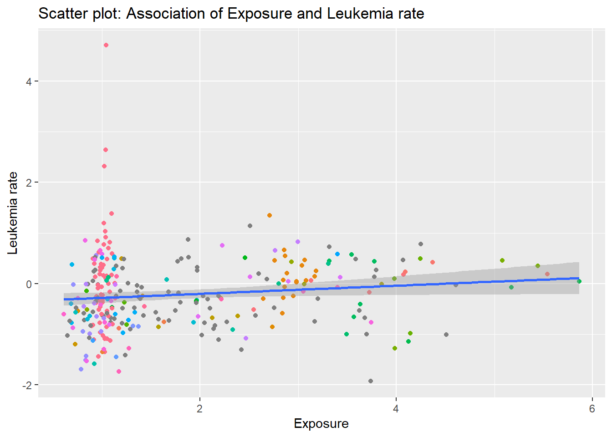

When we undertake classic linear regression, one of the assumptions include that the independent variables should be independent of each other. However, in case the variables are related spatially, the assumption is voilated. It is therefore recommended that at the outset, in the exploratory phase of any study, we should look for spatial correlation. In case, it is not present, the researcher can proceed with non spatial regression models, however, if present, Geographically Weighted Regression (GWR) should be undertaken.
What to do if spatial dependence is suspected?
If you feel like your data has spatial dependence, then the following steps should be carried out:
Inspect your data, construct an appropriate spatial neighborhood, and assign weights.
Run an OLS regression with your variables of interest. This regression assumes spatial independence.
Inspect results and plot your residuals.
Compute the Moran’s I value for the residuals.
If you find significant spatial correlation, do a GWR, else proceed with non spatial models.
Demonstration
Analysis without considering spatial dependence
It is expected that the locations where the exposure is high should have higher leukemia rates. In this case, based on our previous understanding, it seems obvious, however, many times we may not be aware of underlying spatial associations and ignore the spatial aspect. Lets see what happens!!
df_gwr |>ggplot()+geom_point(aes(x = PEXPOSURE, y = Z, color = AREANAME) ) +theme(legend.position ="none") +labs(x ="Exposure",y ="Leukemia rate",title ="Scatter plot: Association of Exposure and Leukemia rate") +geom_smooth(aes(x = PEXPOSURE, y = Z),method = lm)
`geom_smooth()` using formula = 'y ~ x'

Simple linear regression without spatial dynamics
model <-lm(Z ~ PEXPOSURE + PCTAGE65P + PCTOWNHOME, data = df_gwr)summary(model)
Call:
lm(formula = Z ~ PEXPOSURE + PCTAGE65P + PCTOWNHOME, data = df_gwr)
Residuals:
Min 1Q Median 3Q Max
-1.7417 -0.3957 -0.0326 0.3353 4.1398
Coefficients:
Estimate Std. Error t value Pr(>|t|)
(Intercept) -0.51728 0.15856 -3.262 0.00124 **
PEXPOSURE 0.04884 0.03506 1.393 0.16480
PCTAGE65P 3.95089 0.60550 6.525 3.22e-10 ***
PCTOWNHOME -0.56004 0.17031 -3.288 0.00114 **
---
Signif. codes: 0 '***' 0.001 '**' 0.01 '*' 0.05 '.' 0.1 ' ' 1
Residual standard error: 0.6571 on 277 degrees of freedom
Multiple R-squared: 0.1932, Adjusted R-squared: 0.1844
F-statistic: 22.1 on 3 and 277 DF, p-value: 7.306e-13
These results suggest that PEXPOSURE is not significant, but census variables are (home ownership and percent oldies). It’s also useful to glance at R-squared estimates. It gives a sense of how well model fits the data… it tells us how much variation we’ve explained out of the total variation in the model.
Looking at the residuals
In the model above, the residuals should not be spatially related. Lets have a look!
df_gwr <- df_gwr |>mutate(residuals = model$residuals)# Transform df_gwr to sf objectdf_gwr <-st_as_sf(df_gwr,coords =c(lon ="X",lat ="Y"))
Moran’s I
Using neighbor list from polygon list and Spatial weights
Moran I test under randomisation
data: pull(df_gwr, residuals)
weights: neighbor_weights_q_w
Moran I statistic standard deviate = 2.4457, p-value = 0.007229
alternative hypothesis: greater
sample estimates:
Moran I statistic Expectation Variance
0.083090278 -0.003571429 0.001255603
Geographically weighted regression: spatial Lag model
model <-lagsarlm(formula=Z~PEXPOSURE+PCTAGE65P+PCTOWNHOME,data=df_gwr,listw=neighbor_weights_q_w,quiet=T)summary(model)
Call:lagsarlm(formula = Z ~ PEXPOSURE + PCTAGE65P + PCTOWNHOME, data = df_gwr,
listw = neighbor_weights_q_w, quiet = T)
Residuals:
Min 1Q Median 3Q Max
-1.586752 -0.391580 -0.022469 0.338017 4.029430
Type: lag
Coefficients: (asymptotic standard errors)
Estimate Std. Error z value Pr(>|z|)
(Intercept) -0.514495 0.156154 -3.2948 0.000985
PEXPOSURE 0.047627 0.034509 1.3801 0.167542
PCTAGE65P 3.648198 0.599046 6.0900 1.129e-09
PCTOWNHOME -0.414601 0.169554 -2.4453 0.014475
Rho: 0.038893, LR test value: 6.9683, p-value: 0.0082967
Asymptotic standard error: 0.015053
z-value: 2.5837, p-value: 0.0097755
Wald statistic: 6.6754, p-value: 0.0097755
Log likelihood: -275.2447 for lag model
ML residual variance (sigma squared): 0.41166, (sigma: 0.6416)
Number of observations: 281
Number of parameters estimated: 6
AIC: 562.49, (AIC for lm: 567.46)
LM test for residual autocorrelation
test value: 1.4633, p-value: 0.22641
As expected, spatial auto-regressive parameter \((\rho)\) is highly significant (p = .008). Test for residual autocorrelation is not significant, which suggests that we cannot reject the null of randomly distributed residuals.
Moran I test under randomisation
data: pull(df_gwr, residuals)
weights: neighbor_weights_q_w
Moran I statistic standard deviate = 2.4457, p-value = 0.007229
alternative hypothesis: greater
sample estimates:
Moran I statistic Expectation Variance
0.083090278 -0.003571429 0.001255603